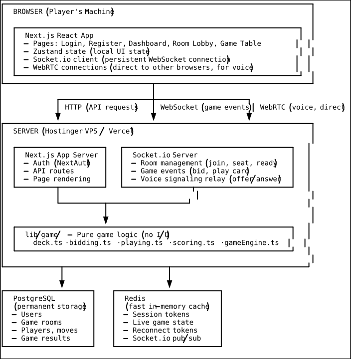
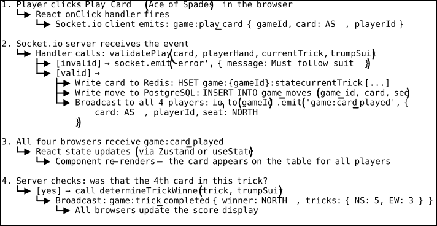
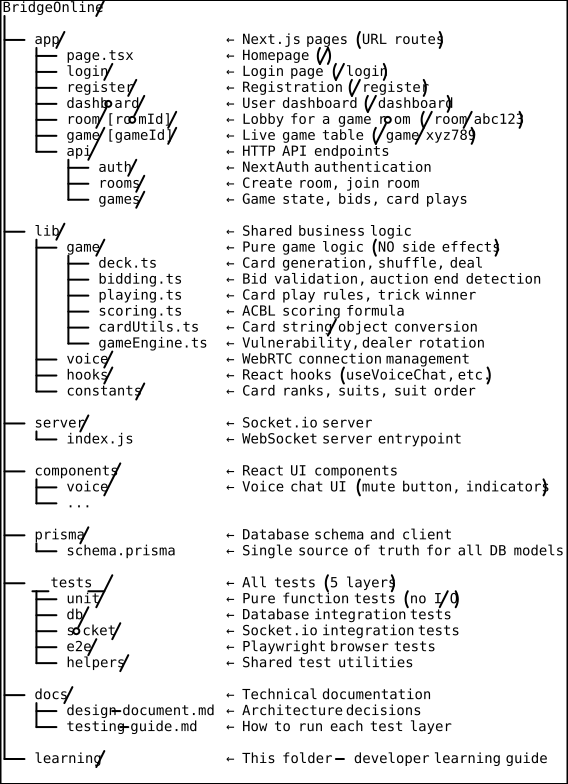

Module 00 — Complete Project Overview
Read this first. No prerequisites.
What Is BridgeOnline?
BridgeOnline is a real-time multiplayer web application where four players play Contract Bridge — a classic card game — together in a browser. Each player sits at a virtual table (North, South, East, West), gets dealt 13 cards, participates in a bidding auction, plays cards trick-by-trick, and sees the final score computed by the server.
The word “real-time” is key. When Player A plays a card, Players B, C, and D see it appear on their screens within milliseconds — not after refreshing the page, not after pressing “fetch updates,” but instantly. This is fundamentally different from a static web page and requires a different class of technology.
Why This Project Is Worth Studying
Most tutorials teach you how to build a TODO list or a blog. BridgeOnline is genuinely harder because it combines:
- Complex domain logic — Bridge has intricate rules: bid validation, trick winner determination, a 40-case scoring formula, and vulnerability-based bonuses. This logic must be correct with zero tolerance for errors.
- Real-time state synchronisation — four players need to see the same game state at the same moment, even though they are on separate machines.
- Security-sensitive data handling — each player must only see their own cards, not their opponents’.
- Persistent storage — if the server restarts, the game must survive.
- Voice communication — players can talk to each other peer-to-peer over WebRTC.
- Scalability challenges — the architecture must work when there are many concurrent games across multiple servers.
Each of these is a real engineering problem, and this project shows how they are solved together, not in isolation.
The Domain: What Is Contract Bridge?
Before understanding the code, you need to understand what the code implements. Bridge is played by four players in two partnerships: North-South (NS) and East-West (EW).
A game round has three phases:
1. Dealing
A standard 52-card deck is shuffled and dealt 13 cards to each player. Each player holds their hand secretly — no one else can see it.
2. Bidding (The Auction)
Starting from the dealer, players take turns making bids. A bid announces how many tricks (rounds of play) your partnership will take, and in what trump suit (or No Trump). Bids look like: “1♠”, “2NT”, “4♥“.
Rules:
- Each bid must be strictly higher than the last (suit hierarchy: ♣ < ♦ < ♥ < ♠ < NT; level hierarchy: 1 < 2 < … < 7)
- You can “Pass” (no bid), “Double” (challenge an opponent’s bid), or “Redouble” (respond to being doubled)
- The auction ends when three consecutive players pass after any bid
- The partnership that made the highest bid becomes the “declaring side”; the player who first bid that suit becomes the “declarer”
3. Playing (The Card Play)
The player to the left of the declarer plays the first card (“the opening lead”). Declarer’s partner (“the dummy”) lays their entire hand face-up on the table for everyone to see. Declarer plays both their own hand and the dummy.
Each trick: all four players play one card. You must follow the led suit if you have it. Trump cards beat all other suits. The highest card of the led suit wins the trick (or the highest trump if any trump was played).
4. Scoring
If the declaring partnership takes at least as many tricks as they bid, they score points. If they fall short, the defending side scores penalty points. Bonuses apply for games (trick score ≥ 100), small slams (bidding 6), grand slams (bidding 7), and vulnerability status (having won a previous round).
The Complete Architecture

Every part of this diagram corresponds to a module in this learning series.
What Happens When a Player Plays a Card
Tracing a single action through the entire system is the clearest way to understand how everything connects.

This whole round-trip — click to all-four-screens-updated — happens in under 100ms on a good connection.
Directory Structure Explained

The Technology Decisions — Complete Rationale
Every tool was chosen for a specific reason. Here is the complete picture of why each was picked over its alternatives.
Why Next.js 14 (App Router) instead of plain React + Express?
What Next.js gives you:
- File-based routing — create a folder, get a URL. No manual route configuration.
- API routes — write backend endpoints in the same codebase and deploy them together.
- Server-side rendering — pages load with content already in the HTML (better SEO, faster perceived load time).
- Built-in TypeScript support, image optimisation, and font loading.
The alternative: React (frontend) + separate Express.js (backend). This requires two codebases, two deployments, CORS configuration, and duplicated TypeScript types. For a small team, this overhead is high.
Why App Router instead of Pages Router? App Router (Next.js 13+) supports React Server Components — components that run only on the server and never ship JS to the browser. For game pages that don’t need heavy interactivity at first load, this reduces bundle size. The [roomId] and [gameId] dynamic segments also have better support in App Router.
Why PostgreSQL instead of MongoDB?
What PostgreSQL gives you:
- Relational model with enforced foreign keys — if you try to create a
GamePlayerrow referencing aGameRoomthat doesn’t exist, the insert is rejected. This catches bugs automatically. - ACID transactions — multiple related writes either all succeed or all fail, never half-completing.
- Strong consistency — every read gets the latest committed data.
- Mature tooling, 30+ years of battle-tested reliability.
MongoDB is a document database. It stores JSON documents without enforcing relationships. This sounds convenient — you can store a game room and its players as a single nested document. But:
- If your application has a bug that writes an invalid player reference, MongoDB silently accepts it.
- Querying across relationships (e.g., “find all games where this user played as North”) requires application-side joining.
- Transactions in MongoDB exist but are more complex and less efficient than PostgreSQL transactions.
For a game with strict data relationships (room → players → game → moves → result), PostgreSQL’s relational model is the right fit.
Why Redis instead of just PostgreSQL for everything?
The access pattern difference:
| Operation | PostgreSQL | Redis |
|---|---|---|
| Read game state | ~5–20ms (disk seek) | ~0.1–1ms (RAM) |
| Write game state | ~5–20ms | ~0.1–1ms |
| Store session token | Adds a DB query per HTTP request | Sub-millisecond |
| Socket.io pub/sub | Not possible natively | Built-in |
For operations that happen dozens of times per minute per game (session checks, state reads on every socket event), 20ms per operation becomes noticeable. Redis keeps hot data in RAM, making these operations near-instant.
Redis is not a replacement for PostgreSQL — it has no durability guarantees by default (data is lost on restart unless you configure persistence). The pattern is: Redis holds the fast-path current state, PostgreSQL holds the permanent record.
Why Socket.io instead of raw WebSockets?
What raw WebSockets give you: A low-level bidirectional channel. You send strings or binary data. That’s it.
What Socket.io adds on top:
- Named events — instead of parsing every message to determine its type, you register handlers by name:
socket.on('game:bid_made', handler). - Automatic reconnection — if a connection drops, Socket.io reconnects automatically with exponential backoff.
- Rooms — named groups for broadcasting.
io.to('room-abc').emit(...)sends to everyone in that room. - Fallback transport — if WebSockets are blocked by a corporate firewall, Socket.io falls back to HTTP long-polling automatically.
- Namespace — you can partition a single server into logical sub-servers.
The alternative: Writing all of this yourself on top of the ws library. Technically possible, but weeks of work to match Socket.io’s reliability.
Why WebRTC for voice instead of streaming audio through the server?
Server-relayed audio:
Player A microphone → encode → send to server → server relays to B, C, D
Every voice packet passes through your server. Cost: bandwidth × number of players × duration. For a 1-hour game with 4 players, that’s potentially gigabytes of audio data on your server bill.
WebRTC peer-to-peer:
Player A microphone → encode → send directly to B, C, D
The server is only involved in the 2-second handshake. Audio flows directly between browsers. Server bandwidth cost: negligible.
The tradeoff: WebRTC is significantly more complex to implement (SDP, ICE, STUN, TURN). But the bandwidth savings and latency improvement (direct peer connection is faster than going through a server) justify the complexity for a voice chat feature.
Why Prisma instead of writing raw SQL?
Raw SQL problems:
// Easy to make mistakes, no autocomplete, no compile-time errors
const result = await db.query(
"SELECT * FROM game_rooms WHERE invite_code = $1 AND expires_at > $2",
[inviteCode, new Date()]
);
// What is result.rows[0]? TypeScript has no idea.
// If you rename the column, this breaks at runtime, not compile time.Prisma:
// Fully typed, autocomplete works, rename refactors work
const room = await prisma.gameRoom.findFirst({
where: { inviteCode, expiresAt: { gt: new Date() } }
});
// TypeScript knows room is GameRoom | null
// If you rename inviteCode in the schema, this line shows a compile errorPrisma generates TypeScript types directly from your schema. Every model, every field, every relation is typed. Column renames and model additions are caught at compile time, not in production.
Alternative: Drizzle ORM — a newer, lighter ORM also with type safety. Drizzle is closer to raw SQL and has slightly better performance. Prisma is more mature, has better documentation, and a larger community. For a project focused on learning, Prisma’s explicit schema file and generated types make the database structure obvious.
Why Vitest instead of Jest for testing?
Jest is the dominant JavaScript testing framework. But this project uses Next.js 14 with ESM (ECMAScript Modules) — the modern import/export syntax. Jest historically had poor ESM support and required complex Babel configuration to work with it.
Vitest is designed from the ground up for ESM and Vite/Next.js ecosystems. It:
- Works with ESM imports natively
- Is 2–5× faster than Jest due to parallel test execution and Vite’s build pipeline
- Has an identical API to Jest — if you know Jest, you know Vitest
- Supports
vitest.config.tsthat can inherit from the existingnext.config.ts
Why Playwright instead of Cypress for E2E tests?
Cypress: Runs tests inside a special Chromium variant, has a great visual debugging UI, very beginner-friendly.
Playwright: Supports Chromium, Firefox, and WebKit. Supports multiple browser contexts in a single test (critical for testing 4 players simultaneously). Has better support for async/await patterns. Faster for parallel test execution.
The killer feature for BridgeOnline: multiple browser contexts. A 4-player E2E test requires 4 separate browser sessions running simultaneously. Playwright supports this natively — each context is isolated (separate cookies, separate local storage). Cypress cannot do this without complex workarounds.
The GitHub Issues: Planned vs Implemented
From the start, 9 GitHub issues were filed to track all planned work. Here is the full status:
| Issue | Title | Priority | Status |
|---|---|---|---|
| #13 | Redis adapter for Socket.io horizontal scaling | P0 | Open |
| #14 | Hot/cold game state (Redis + PostgreSQL) | P0 | Open |
| #15 | BullMQ queue for durable game actions | P1 | Open |
| #16 | Player reconnection protocol (30s grace) | P1 | Open |
| #17 | Service separation (Next.js / Socket.io / Worker) | P2 | Open |
| #18 | Dynamic short-lived TURN credentials | P2 | Open |
| #19 | Missing PostgreSQL indexes | P2 | Open |
| #20 | Observability (Sentry, Prometheus, Pino) | P3 | Open |
| #21 | Testing framework (all 5 layers) | P0 | Closed ✅ |
Issue #21 is the foundation — tests must exist before you can safely implement any of the others. That is why it was done first.
The Session-by-Session Timeline
| Session | Date | Key Output |
|---|---|---|
| 001 | 2026-04-20 | Design document written and trimmed; all 9 GitHub issues filed |
| 002 | 2026-04-20 | Layer 1 unit tests implemented — 123 tests, all passing |
| 003 | 2026-04-20 | Layers 2–5 implemented (DB, Socket.io, Playwright E2E) |
| 004 | 2026-04-21 | DB test concurrency bug fixed; full CI pipeline added; #21 closed |
| 005 | 2026-04-21 | WebRTC voice chat committed; docs/learning reorganized; build errors fixed; issues 17 deprioritized to P3 |
How the Learning Modules Map to the Code
| Module | Code Location | What It Teaches |
|---|---|---|
| 01 — Architecture | docs/design-document.md | Why these tools, what the system looks like |
| 02 — Game Logic | lib/game/*.ts | Pure functions, DSA in real code |
| 03 — Database | prisma/schema.prisma, __tests__/db/ | Schema design, constraints, ORM |
| 04 — Real-Time | server/index.js, __tests__/socket/ | WebSockets, event model, broadcast |
| 05 — Testing | __tests__/**, vitest.config*.ts | 5-layer strategy, bugs found in tests |
| 06 — WebRTC | lib/voice/, lib/hooks/useVoiceChat.ts | P2P voice, signaling, ICE/STUN/TURN |
| 07 — Scalability | GitHub Issues #13–#20 | Redis, queues, reconnection, observability |
| 08 — TypeScript Patterns | app/api/**/*.ts, tsconfig.json | Async params, Prisma enums, JSON casts, narrowing |
Before You Continue
Make sure you can answer these questions about the overview:
- Why do we need both PostgreSQL and Redis? Why not just use Redis for everything?
- What would break if we used HTTP polling instead of WebSockets for game events?
- Why does voice chat use WebRTC instead of routing audio through the server?
- Why are game logic functions pure (no side effects), while Socket.io handlers are not?
- What does the server know that the client must never know?
If you can answer these, you are ready to go deeper in each module.
Start with: Module 01 — Architecture & Design